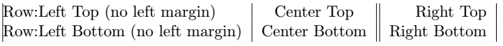

A basic table is built with a tabular environment. Its first argument contains what we call a preamble which contains a definition of each column. The preamble is mandatory. Inside the environnment, each column is separated by &. In LaTeX, & is what we call an active character. If you want to insert an ampersand in your text, you have to use the \& command instead. Finally, each row is separated by the command \\. A simple table would therefore be:
\begin{tabular}{lll}
A1 & B1 & C1 \\
A2 & B2 & C2 \\
A3 & B3 & C3
\end{tabular}
This would result in the following table:
The preamble consists of a serie of column definition. Each column definition contains a character to set the text-alignment and may contains optional supplemental characters to customize the column. Here are some of the most important characters that can be used:
| Character | Description |
|---|---|
l | Left-aligned column |
c | Center-aligned column |
r | Right-aligned column |
| | Vertical border |
@{<Content>} | <Content> is inserted in the cell and the margin of the cell is removed |
Therefore, if we take for example this table:
\begin{tabular}{|@{Row:}l|c||r|}
Left Top (no left margin) & Center Top & Right Top \\
Left Bottom (no left margin) & Center Bottom & Right Bottom
\end{tabular}
The preamble is separated in this way:
| Column 1 | Column 2 | Column 3 |
|---|---|---|
|@{Row:}l| | c|| | r| |
This code would result in the following table:
We've already seen how to add vertical borders. However, how can we add horizontal borders? To do so, we use the command \hline. Using the command twice, with \hline\hline, produces a double horizontal border. Horizontal borders are always placed after a line break (\\), even on the last row. If you are looking for a partial horizontal border, one can use \cline{<i>-<j>} instead. This command will draw a horizontal border starting from the column i (columns start at 1) and ending at the column j.
\begin{tabular}{|l|l|l|}
\hline
A1 & B1 & C1 \\ \hline
A2 & B2 & C2 \\ \cline{1-2}
A3 & B3 & C3 \\ \hline
\end{tabular}
For now, we looked into how to use columns definition with a preamble. However, sometimes, you might want to have a cell that would not follow the definition of its column. To do this, we use the command \multicolumn.
\multicolumn is a command that allows you to merge several columns. It takes the following arguments:
\multicolumn{<Nb-of-columns>}{<Column-definition>}{<Content>}Therefore, if you want to change the column definition of a cell, we use \multicolumn and set the first argument to 1. This code shows you how:
\begin{tabular}{|l|l|l|}
\hline
Very very long text & Very very long text & Very very long text \\ \hline
Left-aligned & Left-aligned & Left-aligned \\ \hline
\multicolumn{1}{|r|}{Right-aligned} & Left-aligned & Left-aligned \\ \hline
\end{tabular}
This would result in this table:
As you may have noted, we chose |r| as the second argument of \multicolumn to have a right-aligned cell, but keep the borders.
As we saw earlier, we use \multicolumn{<Nb-of-columns>}{<Column-definition>}{<Content>} to merge columns. We have to provide the column definition in the second argument. When we use \multicolumn, we omit the & active characters.
To merge rows, we use instead \multirow, which comes from the package multirow. It takes the following argument:
\multirow{<Nb-of-rows>}{<Width>}{<Content>}However, instead of specifying the second argument (the width of the cell), we can use the special character * which will calculate the width for us. If you want to combine merged columns and merged cells, \multirow must be inside \multicolumn. See the following example:
% Insert the following commented line before \begin{document}:
% \usepackage{multirow}
\begin{tabular}{|l|l|l|l|} \hline
\multicolumn{4}{|l|}{Merged columns} \\ \hline
\multirow{2}{*}{Merged rows} & B2 & C2 & D2 \\ \cline{2-4}
& B3 & \multicolumn{2}{l|}{\multirow{2}{*}{Merged columns and rows}} \\ \cline{1-2}
A4 & B4 & \multicolumn{2}{l|}{} \\ \hline
\end{tabular}
Which will result in the following table:
As you can see, this can become very tedious. Our editor take care of the code for you, so you can concentrate on the content of your table. Notice that we have to use \cline instead of \hline for some rows, otherwise the horizontal border would cross the merged table cell.
LaTeX is a typographical system and certain conventions have been adopted by its users regarding tables. The booktabs tables add some commands to help follow these conventions. One of these is that there should never be vertical borders in a table.
booktabs add several commands related to horizontal borders:
| Command | Description |
|---|---|
\toprule | Top border |
\bottomrule | Bottom rule |
\midrule | Any horizontal rule in the middle |
\cmidrule{<i>-<j>} | The equivalent of \cline |
Here is an example of a booktabs table:
% Insert the following commented line before \begin{document}:
% \usepackage{booktabs}
\begin{tabular}{lll} \toprule
A1 & B1 & C1 \\ \midrule
A2 & B2 & C2 \\
A3 & B3 & C3 \\ \bottomrule
\end{tabular}
which will result in this table:
You might recognize this type of table. The top and bottom border are thicker and the table is spaced more evenly.
table environmentFinally, it might be useful to have a caption for your table and a label. A label allows you to refer to your table with \ref{<label>} to print the number of the table, or \pageref{<label>} to print the number of the page where the table is located.
The caption is defined with \caption{<text>} and the label with \label{<text>}. The caption and the label are instead in the table environment. The table environment is what is called a float. This means that LaTeX might place your table somewhere else in the document to have the best typographical presentation possible.
Here is how we use the table environment:
\begin{table}
\centering % Center your table
\caption{Your caption} % Caption
\label{tab:my-first-table} % Label
\begin{tabular}{|l|l|l|} \hline % Your table
A1 & B1 & C1 \\ \hline
A2 & B2 & C2 \\ \hline
A3 & B3 & C3 \\ \hline
\end{tabular}
\end{table}
which will result in this table:
If you prefer when the caption is under the table, move the \caption command before the end of the table environment.
In this article, you learned the basic components of a table and how to build them with LaTeX. Of course, you may do much more, including colors, border thickness, border types, rotated cells... However, this is a strong beginning. In the mean time, use our editor. As you may know, or as you will discover, coding tables by hand in LaTeX may become troublesome as soon as your table is a little bit complex. We take care of packages compatibility issues and typographical issues for you.